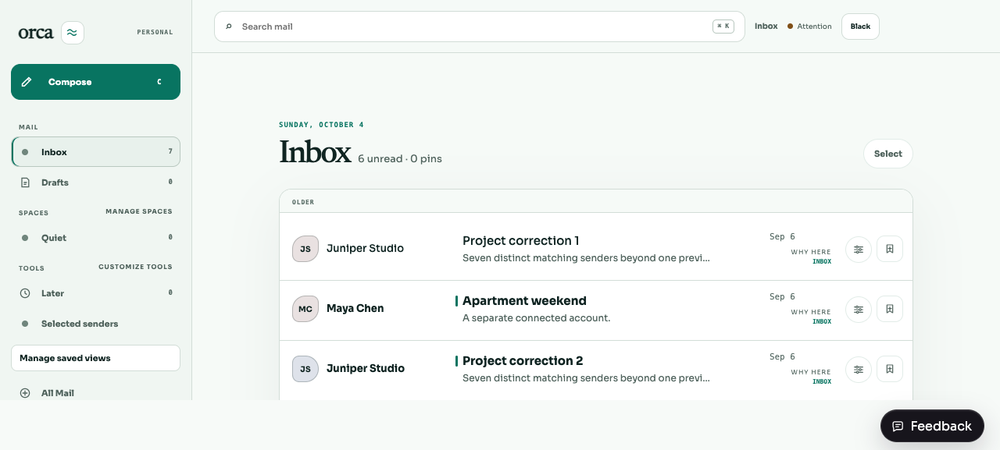
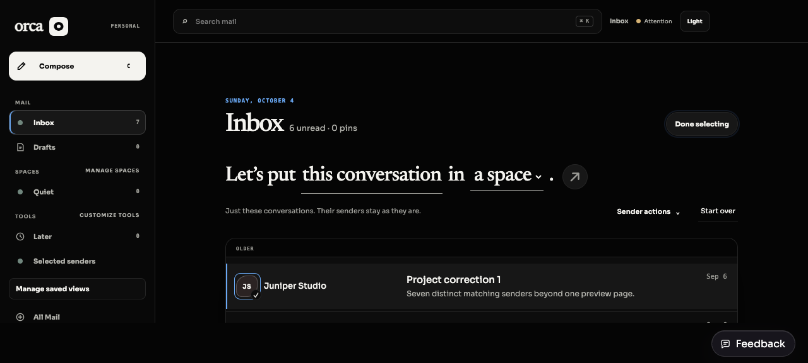
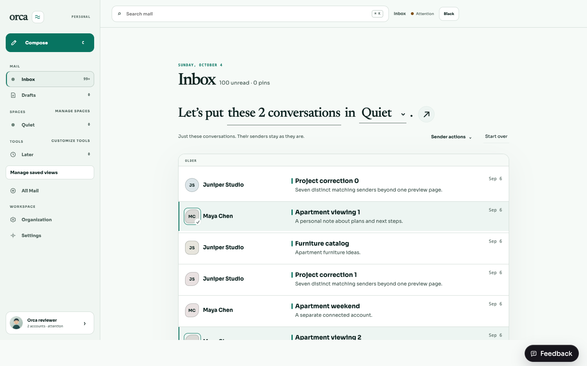
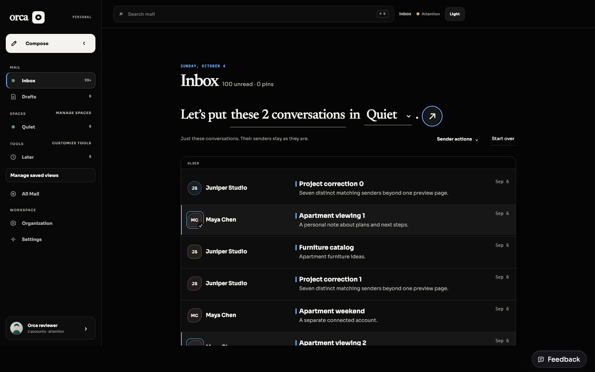
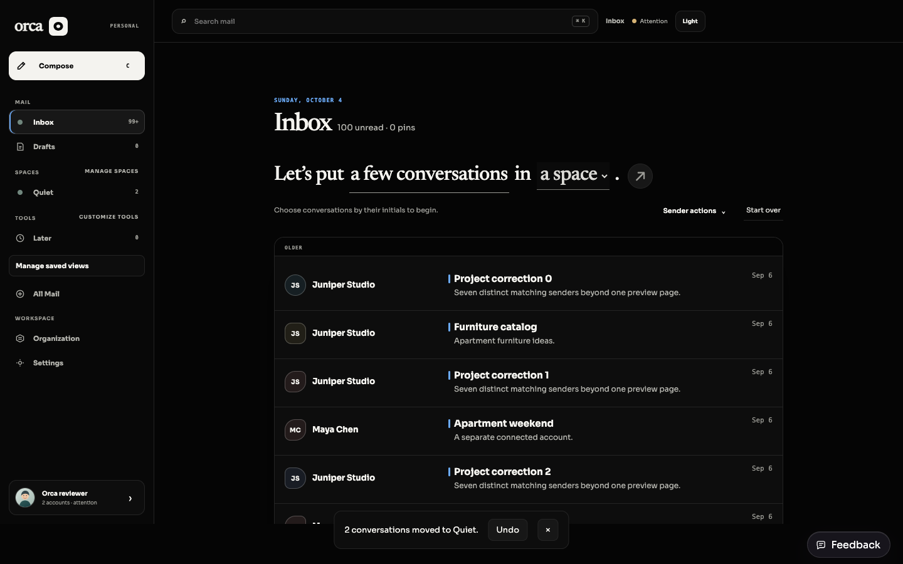
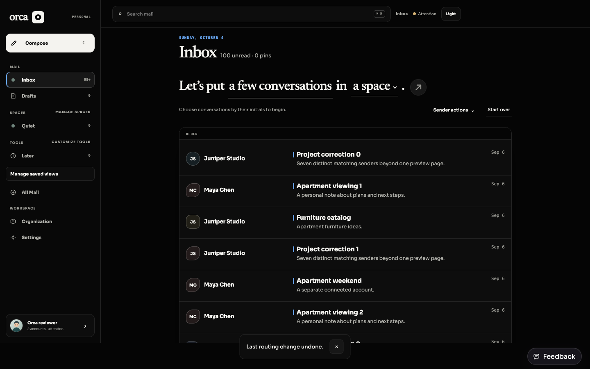
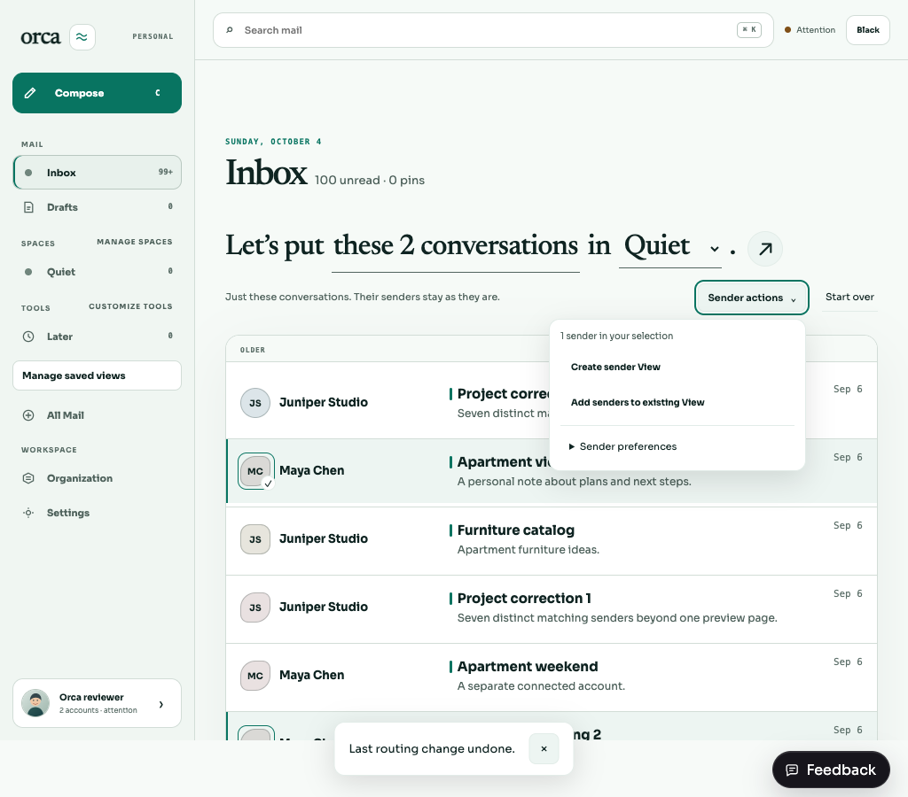
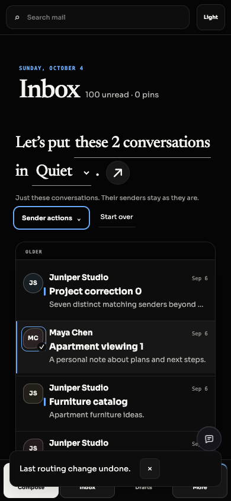
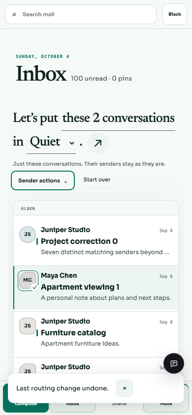

Orca / approved concept C / October 4, 2026
Selection becomes a sentence.
Choose conversations through their initials, complete “Let’s put these conversations in a space,” then press the arrow to move. Sender-wide actions live in a separate disclosure. Start over clears the selection and chosen destination.
Contextual selection update
The sentence stays hidden during normal reading. Click sender initials or Select to reveal it. Start over, Done selecting, or Escape exits selection and hides the sentence.

Normal reading: no sentence
Sentence appears after selectingNative iOS reference screenshots: moves and sender Views, light and dark
Verified
1,352 tests passed across shared, API, and web. Typecheck, lint, and production build passed. The updated semantic-color test also passed after its assertions were aligned with the new stylesheet.
Headless browser verification used synthetic mail in a disposable SQLite database: actual move and Undo, sender disclosure, keyboard focus and Escape, light/dark themes at 1440, 1024, and 390 pixels, with no horizontal document overflow. Existing tests cover revision conflicts, failed requests, recovery, stale query ownership, account scoping, and sender View return.
Try it
- Run
bun scripts/bre-387-review.ts --provider-refresh-noop and open its printed review login URL. - Create a second space in Manage spaces, then return to Inbox.
- Click two sender initials. Pick the new space in the sentence and press the arrow. Confirm only those conversations move.
- Use Undo in the receipt; confirm both conversations return.
- Open Sender actions. Escape closes that disclosure first; a second Escape outside the native select clears selection. Start over also resets the destination.
- Repeat in both themes and at phone width. Tab through controls to inspect visible focus.
The harness uses disposable synthetic data. Preview mode at /dev/inbox demonstrates selection but disables moving until an account is connected. Archived exploratory code lives on prototype/selection-concepts-c.

Light · selected conversations and destination
Dark · keyboard focus on explicit move
Move · receipt after updating the disposable mailbox
Undo · conversations restored
Sender actions · narrow desktop
Phone width · sentence wraps
Phone width · light theme